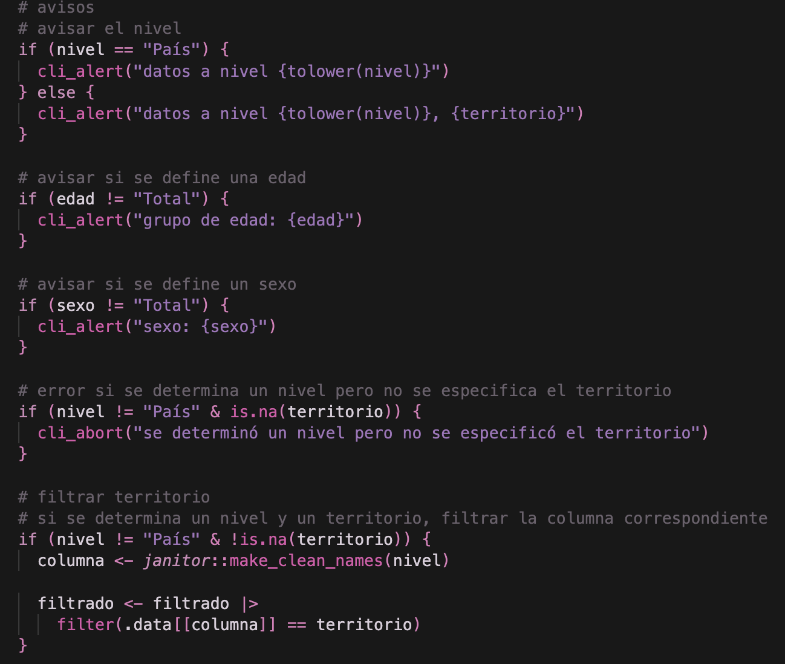

Creando una función para consultar datos en R
Crea tu propia API para obtener cifras desde bases de datos más rápido
23/5/2026
En este tutorial veremos cómo crear una función en R diseñada para consultar datos. Este puede ser el primer paso para crear una API, una herramienta para entregarle a una inteligencia artificial, o simplemente algo conveniente de hacer para consultar datos.

Como ejemplo, crearemos una función para consultar la población de comunas, regiones, provincias o país según resultados del Censo 2024, diseñada para registrarla como herramienta para LLMs y así hacer que la IA pueda consultar datos de población censal.
En el siguiente tutorial está el código completo de la función que vamos a crear:
Caso real de función de consulta de datos

Repositorio censo_poblacion_consultar
Repositorio con código que procesa el Censo 2024 para transformarlo a formato tidy, crea una función tipo API para consultar los datos, y luego entrega esta función a un LLM para que pueda usarla para responder consultas.
En R es muy fácil filtrar y seleccionar cualquier base de datos para obtener las cifras que quieras.
Basándonos en el
Censo 2024 de Chile, si queremos (por ejemplo) saber la población de una comuna, cargamos el Censo, filtramos la comuna con filter(), luego agrupamos por comuna con group_by() y finalmente sumamos las observaciones con summarize() para obtener la población:
library(arrow)
Warning: package 'arrow' was built under R version 4.4.3
censo <- open_dataset("~/Documents/Datos/Censo/2024/personas_censo2024.parquet")
library(arrow)
# cargar censo
censo <- open_dataset("personas_censo2024.parquet")
library(dplyr)
censo |>
filter(comuna == 13110) |>
group_by(comuna) |>
summarize(poblacion = n()) |>
collect()
# A tibble: 1 × 2
comuna poblacion
<int> <int>
1 13110 374836
Así obtuvimos la población de La Florida (había que saberse o buscar el código único territorial eso sí 😅).
Tutorial para trabajar con el Censo

Ahora, si queremos la población por sexo, cambiamos la agrupación para hacer el conteo de observaciones por comuna y sexo:
censo |>
filter(comuna == 13110) |>
group_by(comuna, sexo) |>
summarize(poblacion = n()) |>
collect()
# A tibble: 2 × 3
# Groups: comuna [1]
comuna sexo poblacion
<int> <int> <int>
1 13110 2 196375
2 13110 1 178461
Luego, si quieres lo mismo pero para otra comuna, copias el código y cambias el filtro, y así. Después lo necesitas para una región, y tienes que copiar el código, cambiarlo de nuevo…
Si necesitamos hacer esto muy seguido, de repente es mejor optimizarlo. Como dijo Dios en la biblia:
Deberías considerar escribir una función cuando has copiado y pegado un bloque de código más de dos veces.
Hadley Wickham
Funciones en R
Crear una función sirve para ejecutar un conjunto de operaciones de forma más simple, al abstraer el código en un único comando que es más rápido y cómodo de usar.
Lo que antes eran varias líneas de código puede resumirse en una función como filtrar_datos() o similar.
Las funciones también nos ayudan a reutilizar el código al empaquetarlo en una forma más conveniente.
Aprende a hacer funciones
Crearemos una función que sirva para ayudar a obtener cifras de una base de datos. Usaremos como ejemplo el Censo, pero podrás usar estos principios para cualquier otra base de datos, siempre y cuando esté ordernadita.
Aprendiendo esto estarás a un paso de crear tu propia API!
Datos
Los datos que usaremos son una versión de los resultados del Censo 2024 en formato tidy, procesados en R con este script. Esto quiere decir que cada columna representa una variable, y cada fila representa una observación.
Carguemos los datos para explorarlos:
library(readr)
censo <- read_csv2("censo_2024_tidy.csv")
Si no quieres descargar los datos, puedes cargarlos directamente desde internet así:
library(readr)
censo <- read_csv2("https://github.com/bastianolea/censo_poblacion_consultar/raw/master/datos/censo_2024_tidy.csv")
Ahora miremos cómo vienen:
library(dplyr)
censo |>
select(-contains("codigo"))
| nivel | comuna | provincia | region | sexo | edad | poblacion |
|---|---|---|---|---|---|---|
| Comuna | Iquique | Iquique | Tarapacá | Hombres | 0-4 | 5052 |
| Comuna | Iquique | Iquique | Tarapacá | Hombres | 5-9 | 6565 |
| Comuna | Iquique | Iquique | Tarapacá | Hombres | 10-14 | 7482 |
| Comuna | Iquique | Iquique | Tarapacá | Hombres | 15-19 | 6664 |
| Comuna | Iquique | Iquique | Tarapacá | Hombres | 20-24 | 6804 |
| Comuna | Iquique | Iquique | Tarapacá | Hombres | 25-29 | 8211 |
Tenemos columnas que describen la unidad geográfica (comuna, provincia, region), dos variables sociodemográficas (sexo y edad) y finalmente la cantidad de poblacion que cumple los criterios anteriores.
Es decir, cada fila del dataframe describe un grupo de personas con carcterísticas específicas.
Además tenemos la variable nivel que describe si los datos vienen por Comuna, Provincia, Región o País. Por ejemplo:
censo |>
select(-contains("codigo")) |>
filter(nivel == "Provincia")
| nivel | comuna | provincia | region | sexo | edad | poblacion |
|---|---|---|---|---|---|---|
| Provincia | NA | Iquique | Tarapacá | Hombres | 0-4 | 10346 |
| Provincia | NA | Iquique | Tarapacá | Hombres | 5-9 | 13002 |
| Provincia | NA | Iquique | Tarapacá | Hombres | 10-14 | 14154 |
| Provincia | NA | Iquique | Tarapacá | Hombres | 15-19 | 12961 |
| Provincia | NA | Iquique | Tarapacá | Hombres | 20-24 | 13145 |
| Provincia | NA | Iquique | Tarapacá | Hombres | 25-29 | 14644 |
O sea que tenemos los datos de la población visto desde cuatro perspectivas, dependiendo del nivel territorial que nos interese.
Crear una función
Tenemos un dataframe que debe ser filtrado de varias maneras para llegar a una cifra específica.
Sería súper conveniente tener una función llamada algo así como consultar_censo() a la que podamos pedirle cosas como consultar_censo(region = "Maule") para obtener la población de una región, consultar_censo(comuna = "Pirque") para la de una comuna, o bien cosas más complejas como consultar_censo(comuna = "Cerrillos", sexo = "Mujeres", edad = "30-35").
Crearemos una función que vaya filtrando los datos dependiendo de lo que se pida en sus argumentos.
A medida que se van haciendo los filtros, podremos agregar cosas como mensajes que describan lo que se va obteniendo, o aplicar validaciones para confirmar que las regiones existen, si las edades son válidas, etc., y finalmente podremos personalizar cómo se entregan los resultados, entre otros beneficios.
Primero creamos la función:
consultar_censo <- function() {}
Con lo anterior creamos una función que no hace nada. Dentro de los paréntesis de llave ({}) irá todo el código.
Argumentos
Dentro del paréntesis de function() van a ir los argumentos que entreguemos al usar la función (como el filtro de edad o sexo). Por medio de los argumentos podremos consultar los datos.
Para agregar argumentos a una función, solamente hay que indicar su nombre dentro de function(), o bien poner el argumento especificando su valor por defecto (el que tendrán si se dejan vacíos):
consultar_censo <- function(
edad = "Total",
sexo = "Total"
) {
}
Al ejecutar una función, el código en su interior se ejecuta dentro de un entorno propio, y este entorno podrá acceder a los argumentos como objetos que contienen el valor que el/la usuario/a les de. Es decir, cuando ejecutemos la función, los argumentos van a pasar hacia dentro de la función y podremos usarlos como si fueran objetos normales de R.
Por ejemplo, podemos hacer que la función diga lo que recibe:
consultar_censo <- function(
edad = "Total",
sexo = "Total"
) {
require(cli)
cli_alert("edad: {edad}")
cli_alert("sexo: {sexo}")
}
consultar_censo(edad = "30-34", sexo = "Hombres")
Loading required package: cli
→ edad: 30-34
→ sexo: Hombres
Revisar una función
Para probar la función podemos simular sus argumentos, creando objetos que se llamen igual. Por ejemplo, hagamos como que estamos en la función anterior para probar cómo salen los mensajes:
sexo <- "Mujeres"
cli_alert("sexo: {sexo}")
→ sexo: Mujeres
Pero también podemos entrar a la función mientras se ejecuta interrumpiendo su ejecución con la función browser(). Si pones browser() dentro de la función, guardas la función y la usas, la ejecución se detendrá en la línea exacta y estarás dentro del entorno de la función, pudiendo acceder a los argumentos reales:
prueba <- function(numero) {
message("iniciando")
browser() # interrumpir la ejecución
numero * 100
}
prueba(6)
> prueba(6)
iniciando
Called from: prueba(6)
Browse[1]> numero
[1] 6
Aquí entramos a la función y pudimos consultar directamente el valor del argumento numero, y probar a mano cómo va a salir la multiplicación, por ejemplo, para probar qué pasa si alguien pone como argumento un NA, y resolverlo de inmediato!
Filtros
Empecemos a hacer que la función filtre los datos. Para ello simplemente usamos los argumentos dentro de filter().
Pero puede ser que en este paso enfrentemos un primer problemita: como las palabras no son infinitas, a veces puede ser que los argumentos de la función se llamen igual que las columnas del dataframe que queremos filtrar. Esto hará que, cuando intentemos filtrar, R se confunda 😵💫
Ejemplo de la confusión:
sexo <- "Mujeres"
censo |>
filter(sexo == sexo) |>
select(sexo)
# A tibble: 23,825 × 1
sexo
<chr>
1 Hombres
2 Hombres
3 Hombres
4 Hombres
5 Hombres
6 Hombres
7 Hombres
8 Hombres
9 Hombres
10 Hombres
# ℹ 23,815 more rows
sexo con sus propios valores
R se confunde porque tiene dos objetos que se llaman igual: un objeto en el entorno, y una columna dentro del contexto de la evaluación de {dplyr}.
Para solucionar la ambiguedad, podemos cambiar el nombre de los argumentos (por ejemplo, anteponiéndoles un punto, onda .sexo), o bien, especificándole a {dplyr} que los valores que vienen desde afuera del dataframe:
sexo <- "Mujeres"
censo |>
filter(sexo == .env$sexo) |>
select(sexo)
# A tibble: 7,936 × 1
sexo
<chr>
1 Mujeres
2 Mujeres
3 Mujeres
4 Mujeres
5 Mujeres
6 Mujeres
7 Mujeres
8 Mujeres
9 Mujeres
10 Mujeres
# ℹ 7,926 more rows
Anteponiendo .env$ al argumento, explicitamos que el objeto que estamos usando viene desde el entorno de la función, y no es una columna del dataframe. Inversamente, podemos explicitar también con .data$ que nos referimos a una columna de un dataframe y no a un objeto del entorno.
Apliquemos lo anterior para poder usar filtros basados en los argumentos:
consultar_censo <- function(
nivel = "País",
edad = "Total",
sexo = "Total"
) {
# filtros
filtrado <- censo |>
filter(
nivel == .env$nivel,
edad == .env$edad,
sexo == .env$sexo
)
return(filtrado)
}
Ahora no habrá ambigüedad, y podemos probar la función:
consultar_censo(nivel = "País",
edad = "25-29",
sexo = "Mujeres") |>
glimpse()
Rows: 1
Columns: 10
$ nivel <chr> "País"
$ codigo_comuna <dbl> NA
$ comuna <chr> NA
$ codigo_provincia <dbl> NA
$ provincia <chr> NA
$ codigo_region <dbl> NA
$ region <chr> NA
$ sexo <chr> "Mujeres"
$ edad <chr> "25-29"
$ poblacion <dbl> 689840
consultar_censo(nivel = "País",
edad = "30-34",
sexo = "Total") |>
glimpse()
Rows: 1
Columns: 10
$ nivel <chr> "País"
$ codigo_comuna <dbl> NA
$ comuna <chr> NA
$ codigo_provincia <dbl> NA
$ provincia <chr> NA
$ codigo_region <dbl> NA
$ region <chr> NA
$ sexo <chr> "Total"
$ edad <chr> "30-34"
$ poblacion <dbl> 1527489
Va tomando forma! La función sirve para filtrar datos a nivel de país, filtrando por edad y sexo.
Filtros por columnas
Para filtrar una comuna, provincia o región, tenemos tres columnas distintas. Necesitamos una forma donde, dependiendo del argumento que demos, el filtro se aplique a las columnas respectivas (comuna, provincia o region).
Una forma simple de solucionarlo sería con if else.
Hagamos una prueba primero:
region <- NULL
provincia <- NULL
comuna <- "Puente Alto"
# si la comuna no es nula
if (!is.null(comuna)) {
censo |>
filter(nivel == "Comuna") |>
filter(comuna == .env$comuna)
} else if (!is.null(region)) {
# si la comuna es nula pero la región no es nula
censo |>
filter(nivel == "Región") |>
filter(region == .env$region)
}
# A tibble: 57 × 10
nivel codigo_comuna comuna codigo_provincia provincia codigo_region region
<chr> <dbl> <chr> <dbl> <chr> <dbl> <chr>
1 Comuna 13201 Puente … 132 Cordille… 13 Metro…
2 Comuna 13201 Puente … 132 Cordille… 13 Metro…
3 Comuna 13201 Puente … 132 Cordille… 13 Metro…
4 Comuna 13201 Puente … 132 Cordille… 13 Metro…
5 Comuna 13201 Puente … 132 Cordille… 13 Metro…
6 Comuna 13201 Puente … 132 Cordille… 13 Metro…
7 Comuna 13201 Puente … 132 Cordille… 13 Metro…
8 Comuna 13201 Puente … 132 Cordille… 13 Metro…
9 Comuna 13201 Puente … 132 Cordille… 13 Metro…
10 Comuna 13201 Puente … 132 Cordille… 13 Metro…
# ℹ 47 more rows
# ℹ 3 more variables: sexo <chr>, edad <chr>, poblacion <dbl>
Sirve! Dependiendo del argumento que rellenemos, se filtran distintas columnas.
Ahora complementamos la función para que tenga esta capacidad de filtrar distintas columnas dependiendo de los argumentos:
consultar_censo <- function(
region = NULL,
provincia = NULL,
comuna = NULL,
edad = "Total",
sexo = "Total"
) {
require(dplyr)
require(cli)
# mensajes
cli_alert("edad: {edad}")
cli_alert("sexo: {sexo}")
# filtros generales
filtrado <- censo |>
filter(
edad == .env$edad,
sexo == .env$sexo
)
# filtros de territorio
if (!is.null(comuna)) {
cli_alert_info("datos nivel comunal: {comuna}")
filtrado <- filtrado |>
filter(nivel == "Comuna") |>
filter(comuna == .env$comuna)
} else if (!is.null(provincia)) {
cli_alert_info("datos nivel provincial: {provincia}")
filtrado <- filtrado |>
filter(nivel == "Provincia") |>
filter(provincia == .env$provincia)
} else if (!is.null(region)) {
cli_alert_info("datos nivel regional: {region}")
filtrado <- filtrado |>
filter(nivel == "Región") |>
filter(region == .env$region)
}
return(filtrado)
}
Probemos:
consultar_censo(comuna = "La Florida") |>
glimpse()
→ edad: Total
→ sexo: Total
ℹ datos nivel comunal: La Florida
Rows: 1
Columns: 10
$ nivel <chr> "Comuna"
$ codigo_comuna <dbl> 13110
$ comuna <chr> "La Florida"
$ codigo_provincia <dbl> 131
$ provincia <chr> "Santiago"
$ codigo_region <dbl> 13
$ region <chr> "Metropolitana de Santiago"
$ sexo <chr> "Total"
$ edad <chr> "Total"
$ poblacion <dbl> 374836
consultar_censo(provincia = "Cordillera") |>
glimpse()
→ edad: Total
→ sexo: Total
ℹ datos nivel provincial: Cordillera
Rows: 1
Columns: 10
$ nivel <chr> "Provincia"
$ codigo_comuna <dbl> NA
$ comuna <chr> NA
$ codigo_provincia <dbl> 132
$ provincia <chr> "Cordillera"
$ codigo_region <dbl> 13
$ region <chr> "Metropolitana de Santiago"
$ sexo <chr> "Total"
$ edad <chr> "Total"
$ poblacion <dbl> 614587
Increíble señores!
Validación
Otro beneficio de crear funciones para este tipo de operaciones es poder agregar pasos intermedios, tales como revisiones o validaciones que confirmen el funcionamiento correcto de la función, y si es necesario arrojar un error o sugerir soluciones.
Probemos la función para filtrar datos regionales:
consultar_censo(region = "Maule",
sexo = "Hombres") |>
glimpse()
→ edad: Total
→ sexo: Hombres
ℹ datos nivel regional: Maule
Rows: 1
Columns: 10
$ nivel <chr> "Región"
$ codigo_comuna <dbl> NA
$ comuna <chr> NA
$ codigo_provincia <dbl> NA
$ provincia <chr> NA
$ codigo_region <dbl> 7
$ region <chr> "Maule"
$ sexo <chr> "Hombres"
$ edad <chr> "Total"
$ poblacion <dbl> 545255
Ahora veamos qué pasa si nos equivocamos:
consultar_censo(region = "Miaaauuule")
→ edad: Total
→ sexo: Total
ℹ datos nivel regional: Miaaauuule
# A tibble: 0 × 10
# ℹ 10 variables: nivel <chr>, codigo_comuna <dbl>, comuna <chr>,
# codigo_provincia <dbl>, provincia <chr>, codigo_region <dbl>, region <chr>,
# sexo <chr>, edad <chr>, poblacion <dbl>
Cero filas! 🤨 La función simplemente retorna una tabla vacía.
Hagamos que la función revise si el argumento es correcto al confirmar si existe entre los valores posibles:
region <- "Miaule" # prrr 🐾
region %in% unique(censo$region)
[1] FALSE
Falso falso! ❌
Podemos aprovechar de hacer algo cuando la revisión no se cumpla. Podemos poner un if que revise si el valor del argumento está entre los valores posibles, y si no está, tiramos un error con cli_abort("error: región incorrecta!"):
if (nivel == "Región") {
# revisar si la región es válida
if (territorio %in% unique(censo$region)) {
filtrado <- filtrado |>
filter(region == territorio)
} else {
# si región no es válida, error
cli_abort("error: región incorrecta!")
}
}
Agreguémoslo a la función:
consultar_censo <- function(
region = NULL,
provincia = NULL,
comuna = NULL,
edad = "Total",
sexo = "Total"
) {
require(dplyr)
require(cli)
# mensajes
cli_alert("edad: {edad}")
cli_alert("sexo: {sexo}")
# filtros generales
filtrado <- censo |>
filter(
edad == .env$edad,
sexo == .env$sexo
)
# filtros de territorio
if (!is.null(comuna)) {
# revisar si la comuna es válida
if (comuna %in% unique(censo$comuna)) {
cli_alert_info("datos nivel comunal: {comuna}")
filtrado <- filtrado |>
filter(nivel == "Comuna") |>
filter(comuna == .env$comuna)
} else {
# si comuna no es válida, error
cli_abort("error: comuna incorrecta!")
}
} else if (!is.null(provincia)) {
# revisar si la provincia es válida
if (provincia %in% unique(censo$provincia)) {
cli_alert_info("datos nivel provincial: {provincia}")
filtrado <- filtrado |>
filter(nivel == "Provincia") |>
filter(provincia == .env$provincia)
} else {
# si provincia no es válida, error
cli_abort("error: provincia incorrecta!")
}
} else if (!is.null(region)) {
# revisar si la región es válida
if (region %in% unique(censo$region)) {
cli_alert_info("datos nivel regional: {region}")
filtrado <- filtrado |>
filter(nivel == "Región") |>
filter(region == .env$region)
} else {
# si región no es válida, error
cli_abort("error: región incorrecta!")
}
}
return(filtrado)
}
Probemos nuevamente el error:
consultar_censo(region = "Miaule")
→ edad: Total
→ sexo: Total
Error in `consultar_censo()`:
! error: región incorrecta!
consultar_censo(comuna = "La Flower")
→ edad: Total
→ sexo: Total
Error in `consultar_censo()`:
! error: comuna incorrecta!
Incluso podríamos agregar formas de intentar solucionar el error, o sugerencias para nuestros usuarixs. Por ejemplo, algo como:
regiones <- censo |> filter(nivel == "Región") |> pull(region) |> unique()
library(glue)
regiones <- glue_collapse(regiones, sep = ", ", last = " o ")
glue("Las regiones posibles son: {regiones}. Avíspate")
Las regiones posibles son: Tarapacá, Antofagasta, Atacama, Coquimbo, Valparaíso, Libertador General Bernardo O'Higgins, Maule, Biobío, La Araucanía, Los Lagos, Aysén del General Carlos Ibáñez del Campo, Magallanes y de la Antártica Chilena, Metropolitana de Santiago, Los Ríos, Arica y Parinacota o Ñuble. Avíspate
Publicaciones relacionadas

Ahora habría que cubrir otros casos donde la función se use de manera incorrecta. En nuestro caso, no tendría sentido lógico filtrar a la vez por una región y por una comuna.
Probemos cómo validar que solamente uno de los tres argumentos territoriales no sea nulo:
# simulamos los tres objetos
region <- NULL
provincia <- NULL
comuna <- "Puente Alto"
# vemos cuáles no son nulos
no_nulos <- c(
!is.null(region),
!is.null(provincia),
!is.null(comuna)
)
# confirmamos que sea solo 1 no nulo
if (sum(no_nulos) == 1) {
message("ok!")
} else {
cli_abort("error: solo se puede definir un argumento territorial a la vez!")
}
ok!
Entonces podemos poner un chequeo así dentro de la función para detenerla antes de que les usuaries hagan cosas inesperadas.
Resultado
Hasta ahora la función ha retornado simplemente los datos filtrados. Pero, como la función es nuestra, podemos personalizar lo que entregue. Como en este caso solamente entrega una cifra a la vez, no tiene mucho sentido entregar un dataframe.
En su lugar, podemos hacer que la función retorne solamente el valor de la columna que sea relevante, o una versión más chica del dataframe.
Simplemente agregando al final de la función algo como pull(poblacion) o select(poblacion) |> pull() podemos hacer que la función entregue solamente el número de población, sin el resto de las columnas. O también, agregando scales::number_format() podemos formatear las cifras para que se entreguen con puntos de miles.
Agreguemos esto y el error que vimos antes a la función para tener su forma definitiva:
consultar_censo <- function(
region = NULL,
provincia = NULL,
comuna = NULL,
edad = "Total",
sexo = "Total"
) {
require(dplyr)
require(cli)
require(glue)
require(scales)
# revisar argumentos territoriales
no_nulos <- c(
!is.null(region),
!is.null(provincia),
!is.null(comuna)
)
# error si hay más de 1 territorio definido
if (sum(no_nulos) != 1) {
cli_abort("error: solo se puede definir un argumento territorial a la vez!")
}
# filtros generales
filtrado <- censo |>
filter(
edad == .env$edad,
sexo == .env$sexo
)
# filtros de territorio
if (!is.null(comuna)) {
# revisar si la comuna es válida
if (comuna %in% unique(censo$comuna)) {
cli_alert_info("datos nivel comunal: {comuna}")
filtrado <- filtrado |>
filter(nivel == "Comuna") |>
filter(comuna == .env$comuna)
} else {
# si comuna no es válida, error
cli_abort("error: comuna incorrecta!")
}
} else if (!is.null(provincia)) {
# revisar si la provincia es válida
if (provincia %in% unique(censo$provincia)) {
cli_alert_info("datos nivel provincial: {provincia}")
filtrado <- filtrado |>
filter(nivel == "Provincia") |>
filter(provincia == .env$provincia)
} else {
# si provincia no es válida, error
cli_abort("error: provincia incorrecta!")
}
} else if (!is.null(region)) {
# revisar si la región es válida
if (region %in% unique(censo$region)) {
cli_alert_info("datos nivel regional: {region}")
filtrado <- filtrado |>
filter(nivel == "Región") |>
filter(region == .env$region)
} else {
# si región no es válida, error
cli_abort("error: región incorrecta!")
}
}
# mensajes
cli_alert("edad: {edad}")
cli_alert("sexo: {sexo}")
# extraer valor
poblacion <- filtrado |> pull(poblacion)
# función de formateo
cifra <- scales::label_comma(
big.mark = '.',
decimal.mark = ',')
# mensaje con resultado
cli_alert_info(
"población censada: {cifra(poblacion)}"
)
return(poblacion)
}
consultar_censo(
comuna = "Cerrillos",
sexo = "Mujeres",
edad = "Total")
[1] 43825
Otra opción es que, si queremos que
un modelo de lenguaje (LLM) use esta función, lo ideal es que entregue un resultado en formato JSON, un formato de texto que las IAs pueden entender fácilmente. Para eso podemos usar la función toJSON() del paquete {jsonlite}.
Publicaciones relacionadas

Avanzado: Si los datos que consulta nuestra función son más complejos, podemos hacer que se retornen varios datos a la vez si los guardamos en una lista. En una lista podemos combinar cifras individuales, distintas tablas, y otros elementos recopilados en un sólo objeto. Por ejemplo:
output <- lista(
"cifra" = poblacion,
"cantidad de observaciones" = nrow(datos),
"tabla" = data.frame()
)
return(output)
De este modo, la función retornará un resultado más complejo y completo, y el usuario podrá verlos todos o elegir uno de ellos para continuar (seleccionando el elemento con el operador $, output$tabla, o con brackets [[, output[["tabla"]]).
Conclusiones
Pasamos de tener que hacer esto:
censo |>
filter(nivel == "Región") |>
filter(region == "Maule") |>
select(-provincia, -comuna) |>
filter(sexo == "Mujeres") |>
filter(edad == "30-34") |>
select(poblacion) |>
pull()
[1] 43749
Y solo obtener un numerito, a poder hacer esto:
consultar_censo(
region = "Maule",
sexo = "Mujeres",
edad = "30-34")
ℹ datos nivel regional: Maule
→ edad: 30-34
→ sexo: Mujeres
ℹ población censada: 43.749
[1] 43749
Ahora la función está lista para entregarla a una inteligencia artificial para que pueda hacer tool calling y responder basándose en datos exactos, o para empaquetar la función en una API y permitir que otros usuari@s extraigan datos, o que sean ingeridos por aplicaciones.
Si quieres ver una versión más completa de la misma función que vimos en este tutorial, y cómo se puede usar por medio de inteligencia artificial, revisa el siguiente tutorial:
Caso real de función de consulta de datos
Repositorio censo_poblacion_consultar
Repositorio con código que procesa el Censo 2024 para transformarlo a formato tidy, crea una función tipo API para consultar los datos, y luego entrega esta función a un LLM para que pueda usarla para responder consultas.
Cómo entregar funciones a una inteligencia artificial
Publicaciones sobre datos